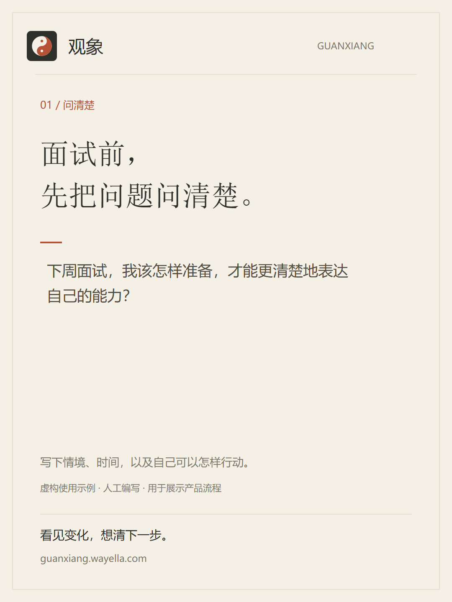
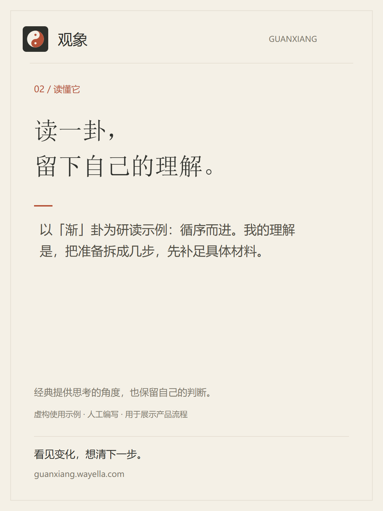
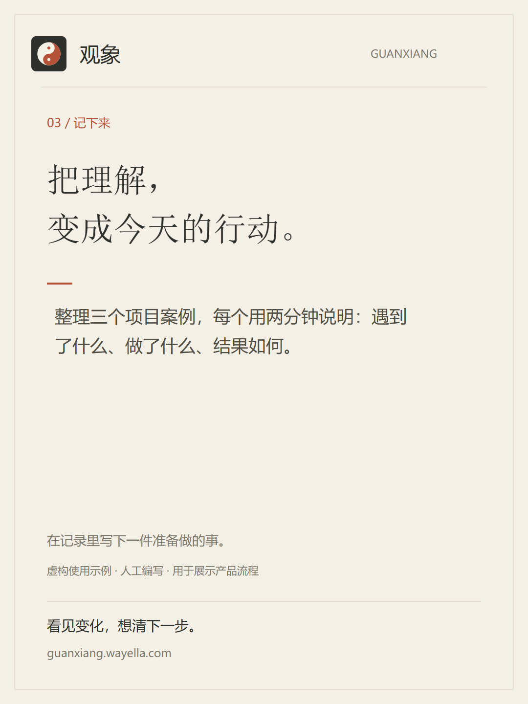
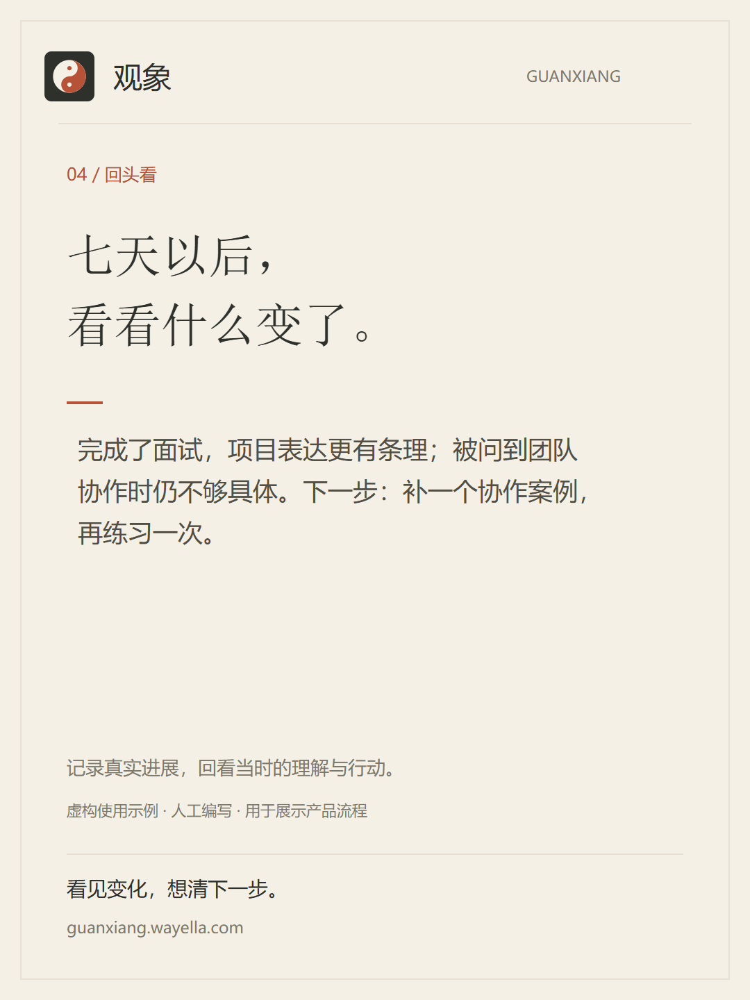

品牌表达 / 首发素材
看见变化，想清下一步。
用《周易》整理问题，用连续记录看见变化。面向愿意认真提问、阅读经典并记录行动的人。
纸色墨色朱砂
四张图，讲清一次完整体验
按顺序用于图文轮播。每张都标注了虚构示例，内容与首页保持一致。



02 / 读懂它
保存 PNG 图片下载可编辑 SVG


03 / 记下来
保存 PNG 图片下载可编辑 SVG


04 / 回头看
保存 PNG 图片下载可编辑 SVG

可以直接使用的首发文案
标题：面试前的困惑，七天后的复盘。
我做了一个叫「观象」的小工具，用《周易》整理问题，也记录自己的理解与行动。
比如面试之前，先写清楚“我该怎样准备”；读完一卦，选一件今天能做的事。七天后再回来，看看哪些做到了，哪些还要调整。相关记录也可以交给 AI 帮忙对照。
配图是一组虚构的使用示例。你可以从自己在意的一件事开始，也可以先读经典。无需先注册就能体验，记录先保存在此设备。
观象｜看见变化，想清下一步。
https://guanxiang.wayella.com/
40 秒录屏脚本
按以下顺序录制产品真实界面；使用单独的演示记录，在画面中持续标注“虚构示例”。
| 时长 | 画面 | 旁白 |
|---|---|---|
| 0–6 秒 | 首页定位、选择起点与整理问题 | 有些问题，需要先写清楚。 |
| 6–14 秒 | 输入示例问题，切换快速起卦，展示操作片段 | 从一件在意的事开始，用《周易》多一个思考的角度。 |
| 14–23 秒 | 阅读结果，在记录里写下准备做的事 | 读完以后，记下一条自己的理解和行动。 |
| 23–33 秒 | 演示记录的“跟进与复盘”，展开第七天的反馈 | 七天后再回来，对照真实进展，想清下一步。 |
| 33–40 秒 | 分享卡片预览，最后停在品牌画面 | 观象。看见变化，想清下一步。 |
快速起卦的结果随机产生。录制时保留真实结果，再据此编写演示理解；首页的「渐」卦仅作公开研读示例，不代表每次都会得到它。
账号简介
观象｜周易研读与个人复盘。读经典，问一件事，记录自己的行动，再看变化怎样发生。